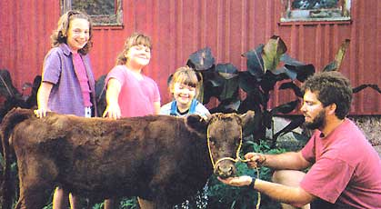
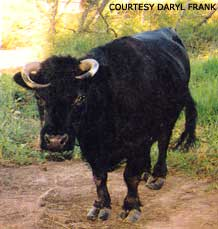
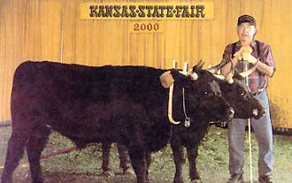
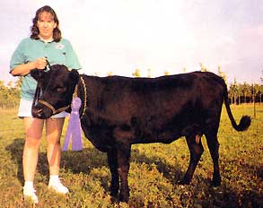

Pound for pound, no bovine can match the diversity of Dexter cattle, one of the smallest cattle breeds. Standing just 36 to 44 inches at the shoulder, Dexters are the perfect old-fashioned, family cow. Gentle, versatile and economical, Dexters efficiently turn pasture into rich milk and lean meat, if you're so inclined. In recent years, interest in Dexter cattle has surged worldwide. Here's why:
They're the perfect size for the family homestead. One Dexter cow will give about 1 to 2 gallons of milk a day, a much more manageable amount for a single family than the 8 to 10 gallons a typical Holstein yields. If you raise a Dexter for beef, you'll need room in the freezer for about 400 pounds of meat, rather than 600 to 800 pounds you'd get from a typical full-size steer.
Owning a Dexter is like owning a piece of history and doing your part to help preserve genetic diversity. They are one of the world's smallest true breeds of cattle, not a miniature developed from a larger breed.
They are believed to have originated in Ireland, and were imported into the United States in the early 20th century. "When I think of Dexters, I think of little, small farms on postage stamps 100 years ago," says Drew Conroy, associate professor of applied animal science at the University of New Hampshire. Conroy says Dexters' small size has contributed to their numbers growing by leaps and bounds today. It also has been their biggest genetic disadvantage: Dexters, especially the smaller ones, are prone to a genetic disorder which occasionally causes cows to give birth to stillborn "bulldog calves," with deformed faces.
Looking after a Dexter can be fun for children and can give them a sense of accomplishment. With proper attention and training, a Dexter can be easily handled by even the greenest homesteader. Don't expect that dazed-cow stare, though. "For their small size, they're pretty lively," Conroy says. Dexters can be trained like oxen to plow or pull wagons, and their strength belies their size. At the same time, that size makes them less intimidating to children and adults.
Veterinarian Donald Bixby, executive director of the American Livestock Breeds Conservancy, recently saw a demonstration of the Dexter's ability in the yoke. While attending a draft-animal workshop, he saw a woman put a 9-year-old Dexter steer into the yoke for the first time. "He stepped right off like he'd been born in it," Bixby said. "I was just amazed at what seemed like an innate willingness to do whatever she wanted."
Those who raise Dexters for beef report tender meat with excellent flavor. Grain-fed Dexters will yield 250 pounds at 12 months, and 475 to 500 pounds at 24 months, dressing at about 60 percent of their live weight. These results can be obtained by supplemental feeding of only 5 to 7 pounds of grain per day for the last two to three months. Grass-fed animals yield about 55 percent of their live weight.
Dexter cows produce about 1 1/2 to 2 gallons a day of about 4 percent butterfat milk - over a full 305-day lactation-when fed for production. (Some exceptional cows can put out up to 5 gallons per day at the height of their lactation.) The fat globules in Dexter milk are very small, which makes the milk more easily digested. The cream easily separates and makes outstanding butter and ice cream.
When producing just for the calf, the cow's milk production will adjust down to the calf's needs. Many small farmers share the milk output with the calf - two quarters for the calf at each feeding and two quarters for the milk pail. Dexters have also been used successfully as "nurse cows," providing milk to two or three calves.
Dexters are a hardy breed that performs well in a variety of climates. In North America, Dexters are raised from Alaska to Florida. Many breeders note that all the Dexter needs is a place to get out of the wind and sun. Many animals even prefer to stay outside in the snow in the middle of winter instead of going into the barn.
Easy and economical to keep, a Dexter consumes about half of what an Angus or Hereford would under the same conditions. A half acre of good green grass per animal, or 12 to 15 pounds of hay and a little grain each day is enough in temperate climates. The cattle are ideal for grazing on older or overgrown pastures.
The cows usually give birth without assistance, and using a calf puller is virtually unknown with Dexters. Calves weigh about 45 pounds at birth, and by the time there weaned at 7 months, they may weigh between 350 and 500 pounds. Both sexes will continue to grow until 5 or 6 years old. Some Dexters have lived to more than 20, and many continue to calve for more than 15 years.
Although they are predominantly black, Dexters also come in dun and red. A horned breed, they have dramatic white horns tipped in black at maturity, although same owners choose to dehorn their animals for safety reasons.
"Dexters are not going to take over the feedlots," says Conroy, "but they are good for people with small farms, like me."
For a list of breeders and more information about Dexters, contact:
American Dexter Cattle Association
26804 Ebenezer
Concordia, MO 64020
(660) 463-7704
or
The Purebread Dexter Cattle Association of North America|
 ANNA POOLE The Foley family, of Howe, Indiana, finds their Dexter heifer just the right size. |
 DARYL FRANK Dexter cattle often have beautiful, curved horns |
 ANNA POOLE Calvin and Hobb, with owner Marvin Johnson, show their practicality as draft animals |
|
 ANNA POOLE Lucy Werner of Lake County, Illinois, shows off her prize-winning Dexter cow, Princess Pride |
|
|